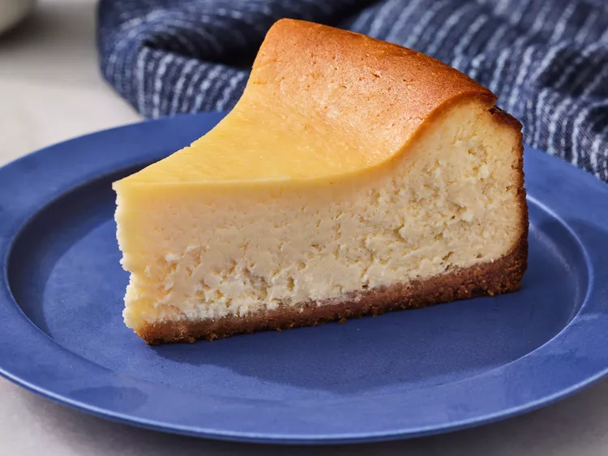

Cheesecake Recipe

Description
A simple and delicious cheesecake recipe. The main ingredients of the cheesecake are quark, eggs and butter. The amount of sugar is variable, 100-200 gramms are a reasonable amount. The preparations are done in around an hour.
Ingredients
- (low-fat) quark 1250 gramms
- 6 eggs
- 125 gramms of butter
- sugar, 100-2oo gramms
- some salt
- Vanillin sugar, 3 packets (around 25 gramms)
- 1 packet of vanilla pudding powder
- 1 lemon
- 3 tablespoons of semolina
Steps
- Melt the butter in a pan and let it cool down for a while.
- In pot A: Add the quark, sugar, vanillin sugar, vanillin pudding powder and two tablespoons of semolina. Add the molten butter, cut the lemon in half and squeeze the juice into the pot.
- In pot B: Crack the six eggs open and add the egg white to pot B, the yolk goes in pot A. Add salt to pot B.
- Use a mixer to blend the content of pot A and pot B.
- Add the content of pot B to pot A, use a big spoon to mix it.
- Put backing paper inside a baking pan (diameter around 28cm), grease it with some butter and sprinkle the last tablespoon of semolina in it.
- Put the mixture from pot A into the baking pan, then bake it for an hour to an hour and a half (depending on zour oven) by around 160 degrees Celsius.
- Let it cool down a bit and enjoy :')